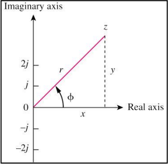

A sinusoid is a signal that has the form of the sine or cosine
function.
A general expression for the sinusoid is v(t)=Vmsin(ωt+θ) where ω=2πf and f=T1
Only two sinusoidal values with the same frequency can be compared by their amplitudes and phase difference.
They're in phase if phase difference is zero and out of phase if phase diff is not zero.
The wave with larger phase constant is called the leading wave.
Phasor
A phasor is a complex number that represents the amplitude and phase of a sinusoid.
It can be represented in one of the following three forms:
Rectangular: z=x+yi=r(cos(ϕ)+isin(ϕ))
Polar: z=r∠ϕ
Exponential: z=reϕi
Note that r=x2+y2 and ϕ=tan−1(xy)

How to transfer from time domain to phasor domain ?
v(t)=Vmcos(ωt+ϕ)↔V=Vm∠ϕ
Phasor WILL ALWAYS be defined from the COSINE function in all our proceeding study.
If a voltage or current expression is in the form of a sine, it will be changed
to a cosine by subtracting from the phase.
The differences between v(t) and V
v(t) is instantaneous or time-domain representation.
V is the frequency or phasor-domain representation.
v(t) is time dependent, V is not.
v(t) is always real with no complex term, V is generally
complex.
Note: Phasor analysis applies only when frequency is constant; when it is applied to two or more sinusoid signals only if they have the same frequency.